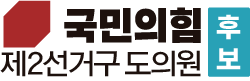

서울대 정책 전문가의 혜안과 법률가의 정직함으로
통영의 내일을 새롭게 열겠습니다.
서울대에서 정치학을 공부하고, 변호사로서 일하며 많은 사람들의 이야기를 들었습니다. 억울한 일을 겪은 분들, 법과 제도의 벽 앞에서 막막해하던 분들, 하루하루 성실히 살아가지만 정작 필요한 도움을 받지 못했던 분들을 만났습니다.
그때마다 저는 생각했습니다. 정치는 거창한 말이 아니라 시민의 삶 가까이에 있어야 한다고. 이제 저는 그 마음으로 통영 앞에 서고자 합니다.
도의원은 멀리 있는 자리가 아닙니다. 통영과 도청 사이를 예산과 정책으로 연결하고, 시민의 불편을 제도로 바꾸고, 지역의 작은 목소리가 경남도정에 닿게 만드는 자리입니다.
국가 정책과 정치 철학을 심도 있게 탐구하며, 더 나은 세상을 만들기 위한 학문적 기반을 다졌습니다.
자랑스러운 통영의 인재들이 지역 사회와 상생할 수 있도록 동문 화합과 발전을 이끌고 있습니다.
어린 시절의 꿈을 키워준 모교를 위해 헌신하며, 후배들의 든든한 지원군 역할을 다하고 있습니다.
법률 전문가로서의 역량을 깊이 있게 다지고, 시민의 권리를 보호하기 위한 실무를 익혔습니다.
공정과 정의가 살아있는 사회를 만들겠다는 굳은 신념으로 치열하게 노력하여 합격의 결실을 맺었습니다.
지역의 인재로서 자부심을 품고 학업에 매진하며 지역 사회에 기여하겠다는 큰 꿈을 키웠습니다.
꿈을 향한 도전의 시작, 고향 통영에서 성실하게 학창 시절을 보냈습니다.